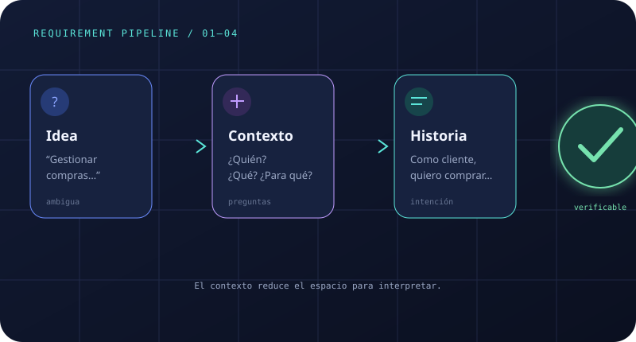
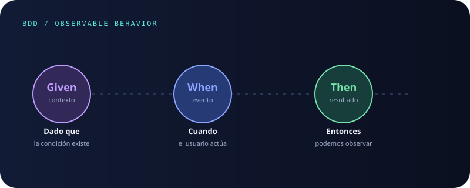

Información recolectada
Trae entrevistas, observaciones, encuestas o documentos de tu proyecto. Si todavía no tienes evidencia, usa el caso ficticio de control de ingreso para practicar sin inventar información de tu proyecto.
Programa Análisis y Desarrollo de Software (ADSO)
Guía 2 · Fase de análisis de requerimientos.
Partirás de información recolectada y producirás, paso a paso, un documento de análisis con contexto, lenguaje del negocio, actores, historias de usuario, requisitos, criterios de aceptación, pruebas, trazabilidad y decisiones iniciales de arquitectura.
Resultado de aprendizaje
Establecer los requisitos del software de acuerdo con la información recolectada.
Antes de comenzar · No necesitas conocer las siglas
Esta guía está escrita para una primera aproximación al análisis de requerimientos. Cada término se presenta con su nombre completo antes de usar una forma abreviada.
Trae entrevistas, observaciones, encuestas o documentos de tu proyecto. Si todavía no tienes evidencia, usa el caso ficticio de control de ingreso para practicar sin inventar información de tu proyecto.
Convertirás frases ambiguas en decisiones claras, relacionadas y comprobables. Las dudas no se ocultan: se registran como preguntas para validar con las personas interesadas.
Entregarás un paquete que explique qué problema se resolverá, para quién, qué debe hacer el software, con qué calidad, cómo se comprobará y qué decisiones iniciales pueden orientar su construcción.
Un documento que crece por capítulos
Cada resultado usa el anterior como entrada. Así evitas saltar de una conversación directamente a pantallas, tablas o tecnologías sin justificación.
Entrada obligatoria · Guía 1 → Guía 2
La Guía 1 no entrega requisitos terminados. Entrega evidencia y candidatos que aquí se deben ordenar, preguntar, priorizar y convertir en una especificación verificable.
| Insumo que traes de la Guía 1 | Qué debes comprobar al recibirlo | En qué se transforma aquí |
|---|---|---|
| Dossier de caracterizaciónSIPOC, flujo AS-IS, proceso y alcance. | ¿El proceso, sus límites y sus fuentes están claros? | Contexto y alcance CTX-*. |
| Matriz de hallazgos validadosDato observable, fuentes trianguladas, decisión y estado. | ¿El hallazgo está validado o sigue en discusión? | Identificadores de evidencia E-*, historias y requisitos candidatos. |
| Candidatos del dominioActores, datos, reglas, eventos y calidades. | ¿La responsabilidad o regla se observó y quién la confirma? | Glosario, reglas, roles, permisos, modelo de datos y RNF. |
| Preguntas abiertas y restriccionesImpacto, responsable y estado. | ¿Qué decisión bloquea o cambia el alcance? | Escenarios alternativos, criterios BDD, pruebas y decisiones pendientes. |
Si todavía no tienes proyecto: usa el caso ficticio “Control de ingreso de equipos”, conserva la etiqueta ejemplo didáctico y reemplázalo por evidencia autorizada en la transferencia a tu proyecto.
Orientación para quien empieza desde cero
La guía contiene material profesional amplio, pero el producto mínimo no exige memorizarlo todo ni producir documentos por volumen. La ruta esencial construye una sola capacidad de extremo a extremo.
Amplía con más historias, modelo de datos, matriz de permisos, caso de uso detallado, integraciones, arquitectura candidata, SOW o métricas avanzadas solo cuando ayuden a tomar una decisión real.
Regla: profundizar agrega claridad y control de riesgo; nunca reemplaza una cadena mínima coherente.
E-01 → H-01 → CTX-01 → HU-01 → RF/RNF-01 → CA-01 → PR-01 → UI-01 → VAL-01 → BL-01G2 construye hasta prueba y backlog; G3 agrega interfaz y validación; G4 planea el ítem sin romper los vínculos.Una sigla forma una palabra corta con letras iniciales; una abreviatura reduce una palabra o expresión. No debes memorizarlas de inmediato: vuelve a este diccionario cuando lo necesites.
El prefijo indica el tipo de documento y el número permite encontrarlo: CTX-03 es “Contexto 03”; HU-03, “Historia de Usuario 03”; RF-03, “Requisito Funcional 03”; RNF-03, “Requisito No Funcional 03”; CA-03, “Criterio de Aceptación 03”; CU-03, “Caso de Uso 03”; PR-03, “Prueba 03”; BL-03, “Elemento de backlog 03”; CMP-03, “Componente 03”; I-03, “Instrumento 03”; GLOS-03, “Término de glosario 03”; RN-03, “Regla de Negocio 03”; y E-OBS-03, “Evidencia de Observación 03”. Usar el mismo número ayuda a leer, pero no demuestra por sí solo que dos artefactos estén relacionados: la relación debe escribirse en la plantilla o en la matriz de trazabilidad.
Cuando aparezca una sigla después de esta sección, ya podrás relacionarla con su nombre completo. Si no la recuerdas, vuelve a este diccionario: comprender el artefacto es más importante que memorizar sus letras.
00 · Ingeniería de contexto
El contexto convierte conversaciones, restricciones y decisiones del negocio en información útil para diseñar.
Cuando una frase permite varias interpretaciones, el equipo debe detenerse y recolectar información. Es más barato aclarar una palabra hoy que corregir un producto mañana.
El beneficio explica la decisión. Si solo documentamos botones y pantallas, perdemos la oportunidad de evaluar si la solución realmente aporta valor.
Un buen requisito permite imaginar una prueba: una condición, una acción y un resultado que otra persona puede observar.

Criterio humano ante inteligencia artificial
La IA puede proponer redacciones, escenarios alternativos o preguntas de calidad. No conoce por sí sola la fuente, el presupuesto, las obligaciones, los conflictos entre actores ni el impacto de una decisión. La persona analista debe verificar, negociar, registrar incertidumbre y asumir la responsabilidad.
BITÁCORA HUMANO–IA · G2
Uso: [no utilizada / utilizada]
Artefacto apoyado: [HU / RF / RNF / CA / PR / otro]
Propósito y prompt:
Datos compartidos y anonimización:
Salida recibida:
Fuentes, pruebas o personas usadas para verificar:
Errores, sesgos o riesgos detectados:
Decisión humana: [aceptar / modificar / rechazar]
Justificación, responsable y fecha:Sin automatización ciega: nunca copies una salida de IA como requisito aprobado. Si no usaste IA, registra “No utilizada” y describe tu método de revisión.
01 · Cadena de derivación
El aprendiz debe poder seguir una misma evidencia hasta el código y la base de datos, y explicar por qué existe cada decisión.
En la garita, el guarda tarda en confirmar si un visitante tiene un ingreso vigente y qué equipos están autorizados. El equipo necesita reducir la espera sin exponer información innecesaria.
Entrevistas, observación, encuestas, documentos y JAD dejan hallazgos con fuente, fecha y contexto.
“El guarda verifica el QR, llama al encargado y anota el ingreso cuando el visitante trae equipos.”Salida: E-OBS-03 · hallazgo verificable y preguntas abiertas.
Los roles nacen de responsabilidades repetidas, decisiones y límites observados; no de cargos escogidos al azar.
Guarda: consulta y decide el ingreso. Administrador: configura usuarios y permisos.Salida: matriz actor–rol–permiso y principio de mínimo privilegio.
El rol se convierte en el punto de vista de una necesidad con valor para el negocio.
Historia de Usuario 03 (HU-03): Como guarda, quiero consultar el registro del visitante mediante su código QR para reducir la espera y tomar una decisión trazable.Salida: una historia pequeña, valiosa, negociable y revisable.
El verbo de la historia se separa en capacidades, entradas, reglas, excepciones y resultados observables.
Requisito Funcional 03 (RF-03): El sistema debe permitir al guarda leer el código QR, localizar el ingreso vigente y mostrar solo datos autorizados.Complemento: el Requisito No Funcional 03 (RNF-03) mide el rendimiento; los ejemplos BDD comprueban los casos vigente, vencido y sin permiso.
El equipo toma una Historia de Usuario priorizada y construye un corte vertical completo, no una capa aislada.
Interfaz para escanear → servicio de aplicación mediante una API → reglas de autorización → consulta → auditoría → pruebas.Incremento: la Historia de Usuario 03 funciona de extremo a extremo antes de sumar reportes o administración.
Los datos que RF y BDD necesitan conservar se convierten en entidades, claves, relaciones, restricciones e índices candidatos.
Visitante → Ingreso; Ingreso ↔ Equipo mediante IngresoEquipo; Usuario → Rol; Ingreso → Auditoría.Validación: cardinalidad, obligatoriedad, unicidad, privacidad, historial y consultas de RF.
No confundas actor con rol: Juan es una persona; Guarda es el conjunto de responsabilidades y permisos con los que Juan opera.
| Hallazgo | Rol derivado | Permiso justificado |
|---|---|---|
| E-OBS-03: verifica QR y decide ingreso | Guarda | Leer ingreso vigente; registrar decisión; no administrar usuarios. |
| E-ENT-02: configura usuarios, equipos y permisos | Administrador | Crear, consultar, actualizar y desactivar catálogos autorizados. |
| E-OBS-03: presenta QR para ser validado | Visitante | Identificarse ante el proceso; no obtiene acceso al panel interno. |
Primero se pregunta qué debe recordar el sistema para cumplir el Requisito Funcional 03; luego se valida el modelo con las consultas y escenarios, antes de escribir instrucciones en Lenguaje de Consulta Estructurado (SQL).
ROL 1 — N USUARIO_ROL N — 1 USUARIOVISITANTE 1 — N INGRESOINGRESO 1 — N INGRESO_EQUIPO N — 1 EQUIPOINGRESO 1 — N EVENTO_AUDITORIARequisito Funcional 03: localizar el ingreso vigente por código QR exige conservar una credencial temporal, el estado y la vigencia; por eso se valida la unicidad y una consulta eficiente antes de escribir SQL.
RF-03 → consulta QR + estado vigente → criterios BDD: vigente / vencido / sin permisoRegla: un sustantivo sugiere una entidad; solo una necesidad validada y una relación comprobada justifican una tabla.
Actividad de trazabilidad
Parte de un hallazgo real de tu proyecto. No saltes directamente a la tabla: justifica cada decisión y deja las dudas como preguntas abiertas.
Hallazgo: el guarda verifica un QR y necesita decidir el ingreso sin llamar al encargado.
Cadena: Guarda → HU-03 → RF-03 + RNF-03 → pantalla de consulta, caso de uso, autorización, auditoría y pruebas → Ingreso, Visitante, Usuario/Rol y EventoAuditoría.
Pregunta que permanece: ¿el QR identifica solo un ingreso o también los equipos autorizados? La respuesta define la relación y no debe suponerse.
02 · Fundamentos
La ingeniería de requisitos conecta la necesidad del negocio con un comportamiento que el equipo puede desarrollar y probar.
El puente del valor
Resume la necesidad desde la perspectiva del actor: quién necesita algo, qué quiere lograr y para qué.
La precisión del comportamiento
Descompone la acción de la historia en una capacidad verificable: actor, entradas, reglas, excepciones y resultado observable.
Anatomía de una historia
01 — 03¿Quién necesita esta capacidad?
¿Qué quiere poder hacer?
¿Qué valor obtiene y por qué importa?
03 · De la historia a la especificación
La historia conserva la intención del actor; el Requisito Funcional (RF) detalla la capacidad y el Requisito No Funcional (RNF) define la calidad o el límite que debe demostrarse.
Se derivan de la acción de la historia. Responden: ¿qué debe hacer el sistema? Incluyen actor, disparador, entradas, reglas, excepciones y salida observable.
Se derivan de la evidencia, los riesgos y las restricciones. Responden: ¿con qué calidad y bajo qué límites? Incluyen atributo, entorno, medida, umbral y método de verificación.
Una historia no se copia como requisito: se analiza su acción y su beneficio, se separan capacidades y reglas en Requisitos Funcionales (RF), y se traducen las expectativas de calidad en Requisitos No Funcionales (RNF) medibles.
| Artefacto | Pregunta guía | Ejemplo derivado del mismo hallazgo | ¿Cómo se verifica? |
|---|---|---|---|
| HU-03 | ¿Quién necesita qué valor? | Como guarda, quiero consultar el registro del visitante mediante su QR para reducir la espera. | Revisión con el actor y comprobación de que la historia sea pequeña, valiosa y comprobable. |
| RF-03 | ¿Qué capacidad y reglas materializan la acción? | El sistema debe permitir al guarda leer el QR y recuperar el registro vigente, mostrando solo datos autorizados. | Prueba funcional, reglas de negocio y escenarios BDD de éxito, vencimiento y permiso. |
| RNF-03 | ¿Qué calidad debe demostrarse? | Con 150 solicitudes concurrentes, el 95 % de las lecturas debe responder en menos de 3 segundos. | Prueba de carga con entorno, datos, versión y percentil registrados. |
Fuente: E-OBS-03.
Actor y disparador: el guarda recibe un visitante con QR.
Regla: el registro debe estar vigente y los datos deben estar autorizados.
Resultado: el guarda puede continuar o detener el ingreso con una decisión trazable.
✕ “La consulta debe ser rápida.”
✓ “Con 150 solicitudes concurrentes, el 95 % de las lecturas responde en menos de 3 s, medido con una prueba de carga.”
Método de Análisis Temprano
Antes de detallar RF y permisos necesitas saber quién participa, qué valor busca y qué límites tiene.
Actor: La persona, organización o sistema externo que interactúa con el software. Ejemplos: Juan o la Interfaz de Programación de Aplicaciones (API) de un banco.
Rol: El conjunto de permisos lógicos en el sistema (Ej: Administrador, Cliente). Un actor asume un rol para operar.
Un requerimiento de seguridad (RNF) clave. Nunca des más permisos de los estrictamente necesarios. Si el Recepcionista solo necesita leer inventario, no le des un rol que le permita borrar productos.
Mapea los roles contra los módulos del sistema usando el acrónimo CRUD (Create/Crear, Read/Leer, Update/Actualizar, Delete/Borrar).
| Módulo / Entidad | Rol: Guarda | Rol: Administrador | Rol: Empleado |
|---|---|---|---|
| Equipos (Inventario) | C, R (Crear, Leer) | C, R, U, D (Total) | Sin Acceso |
| Reportes Ingreso | R (Solo Leer suyos) | C, R, U, D (Total) | R (Solo Leer suyos) |
Método de Análisis de Requisitos
MoSCoW agrupa el trabajo en “Debe”, “Debería”, “Podría” y “No tendrá por ahora”. Sirve para acordar qué se construirá primero sin perder la conexión con el negocio.
Requisitos críticos del núcleo del sistema. Ejemplo: autenticación y registro de ingreso.
Funcionalidades importantes pero con alternativas temporales. Ejemplo: exportación a una hoja de cálculo o a Formato de Documento Portátil (PDF).
Mejoras de experiencia o reportes avanzados. Ejemplo: modo oscuro o notificaciones automáticas.
Requisitos pospuestos explícitamente para versiones futuras. Ejemplo: Reconocimiento facial por IA.
| Identificador del requisito | Necesidad del Negocio | Requisito Funcional redactado | MoSCoW | Criterio Verificable (BDD) |
|---|---|---|---|---|
| RF-01 | Seguridad de activos e ingresos | El sistema debe validar las credenciales del usuario y registrar su rol antes de conceder acceso a la plataforma. | Must | Dado un usuario registrado, cuando ingresa credenciales válidas, entonces accede al panel de su rol. |
| RF-02 | Reducción de tiempos en garita | El sistema debe localizar el registro vigente por número de cédula y mostrar los datos autorizados para el proceso de ingreso. | Must | Dado un registro vigente, cuando el guarda busca la cédula, entonces observa los datos autorizados del visitante. |
Ejercicios guiados
Hallazgo: “En tres observaciones, localizar una herramienta tomó entre 4 y 6 minutos”. Construye una historia con actor, acción y beneficio.
Historia: Como encargado del almacén, quiero consultar la disponibilidad por código para reducir el tiempo de entrega y evitar préstamos duplicados.
Deriva un RF de esta historia: “Como encargado del almacén, quiero consultar la disponibilidad por código para reducir el tiempo de entrega”. Incluye salida y una excepción.
RF: el sistema debe permitir consultar una herramienta por código y mostrar su disponibilidad; si tiene un préstamo activo, debe informar el estado y no permitir duplicar el préstamo.
Completa la cadena con un RNF y un criterio BDD para la consulta de disponibilidad.
RNF: el 95 % de las consultas responde en menos de 2 s bajo la carga acordada. BDD: Dado un código válido, cuando el encargado consulta, entonces observa disponibilidad o el estado de préstamo.
Concepto clave antes de construir
Un caso de uso explica cómo un actor alcanza un objetivo con ayuda del sistema. Sirve para conversar el comportamiento paso a paso y descubrir reglas, excepciones, datos y evidencias antes de diseñar pantallas, endpoints o tablas.
Cómo construirlo
Método reutilizable
Repite esta secuencia con cualquier proyecto. Avanza solo cuando el resultado de un paso tenga fuente, propósito y una pregunta de validación.
04 · Instrumentos de especificación
Avanza de lo más cercano al problema hacia lo más preciso y construible. Estudia la cadena resuelta, copia las plantillas y genera un primer paquete para tu proyecto; todo resultado debe revisarse con interesados, instructor y equipo técnico.
Secuencia didáctica SENA
Ejemplo completamente resuelto
| Artefacto | Identificador | Ejemplo diligenciado | Pregunta de revisión |
|---|---|---|---|
| Evidencia | E-OBS-03 | En tres observaciones, el registro manual tomó entre 230 y 270 segundos por persona. | ¿La muestra cubre franjas y actores representativos? |
| Contexto | CTX-03 | Actor: guarda. Objetivo: reducir espera. Alcance: consultar un registro vigente por QR. Regla: mostrar solo datos autorizados. | ¿El alcance, las reglas y las preguntas abiertas están explícitos? |
| Historia | HU-03 | Como guarda, quiero consultar el registro mediante QR para reducir la espera en el acceso. | ¿Explica quién obtiene valor y para qué? |
| RF | RF-03 | El sistema debe permitir al guarda leer el código QR del visitante y recuperar su registro vigente. | ¿Expresa una sola capacidad observable? |
| RNF | RNF-03 | Con 150 solicitudes concurrentes, el 95 % de las lecturas debe mostrar respuesta en menos de 3 segundos. | ¿Tiene contexto, medida, umbral y método de prueba? |
| BDD | CA-03 | Dado un visitante con registro vigente, cuando el guarda lee su QR, entonces observa los datos autorizados y puede continuar el ingreso. | ¿Describe comportamiento sin imponer implementación? |
| Prueba | PR-03 | Prueba funcional de lectura y prueba de carga con 150 usuarios virtuales; registrar percentil 95. | ¿La evidencia demuestra RF y RNF por separado? |
| Lista de trabajo pendiente | BL-03 | Implementar consulta de registro por código QR con criterios CA-03 y prueba PR-03; prioridad “Debe tener”. | ¿Está lista para estimar y conserva sus vínculos? |
| Componentes | CMP-03 | Derivar datos persistentes, caso de uso, interfaz y estados, permisos y pruebas para un incremento vertical. | ¿Cada decisión se justifica con RF, RNF o BDD? |
Por qué construirlo primero
Un mismo hallazgo puede generar historias incompatibles si cada actor usa la misma palabra con significado diferente. El glosario congela las definiciones acordadas; las reglas de negocio formalizan las condiciones que el sistema debe respetar. Ambos artefactos se construyen antes de redactar RF y RNF para que la especificación no cambie de significado entre sesiones.
Problema sin glosario
"Ingreso" puede ser el evento de acceso del visitante o el registro en la base de datos. Si no se acuerda, el RF y la tabla hablan de conceptos distintos.
Solución con glosario
GLOS-02: Ingreso = evento de acceso de un visitante autorizado con fecha, hora y equipos registrados. Diferente de Entrada = paso físico por la garita.
Ejemplo diligenciado — caso "Control de ingreso de equipos"
| Identificador | Término | Definición acordada | Sinónimos que generan confusión | Estado |
|---|---|---|---|---|
| GLOS-01 | Visitante | Persona externa que solicita acceso temporal al edificio, identificada por su número de documento y un QR de sesión. | "Externo", "invitado", "tercero" | Validado |
| GLOS-02 | Ingreso | Evento de acceso de un visitante: incluye fecha, hora de inicio, estado (vigente / vencido / denegado) y los equipos autorizados en esa sesión. | "Entrada", "visita", "registro" | Validado |
| GLOS-03 | Equipo | Dispositivo tecnológico (laptop, cámara, tablet) que el visitante lleva consigo y que debe quedar registrado en el ingreso. | "Artículo", "ítem", "activo" | En revisión |
| RN-01 | Vigencia de QR | Un QR de ingreso es vigente mientras el visitante no haya salido y la fecha-hora de expiración acordada no haya transcurrido. Un QR vencido no puede reutilizarse. | Origen: E-OBS-03 · RF relacionado: RF-03 | |
| RN-02 | Mínimo privilegio | El rol Guarda puede consultar y registrar ingresos; no puede crear ni eliminar cuentas de usuario ni modificar el catálogo de permisos. | Origen: E-ENT-02 · RF relacionado: RF-01 | |
Plantilla reutilizable — Glosario
IDENTIFICADOR: GLOS-[número]
TÉRMINO: [nombre exacto como lo usan los actores]
DEFINICIÓN ACORDADA: [qué significa en este sistema, no en general]
SINÓNIMOS O NOMBRES ALTERNATIVOS: [otras formas que los actores usan para el mismo concepto]
FUENTE: [quién lo mencionó o en qué hallazgo aparece]
ESTADO: [propuesto / en revisión / validado]
TÉRMINOS RELACIONADOS: [identificadores de glosario vinculados]Plantilla reutilizable — Regla de negocio
IDENTIFICADOR: RN-[número]
NOMBRE: [enunciado breve de la regla]
ORIGEN: [identificador de evidencia o de contexto]
CONDICIÓN: [cuándo aplica — qué debe cumplirse]
CONSECUENCIA: [qué ocurre si la regla se viola o no se cumple]
EXCEPCIONES: [casos en que la regla no aplica, si los hay]
ESTADO: [propuesto / validado / aprobado]
REQUISITO RELACIONADO: [identificador de requisito funcional o no funcional]Construye el glosario junto con los actores: muestra los términos en una sesión corta y pide que cada persona los lea en voz alta. Si alguien lo interpreta diferente, la definición todavía no está acordada.
Las reglas de negocio no son reglas técnicas: describen condiciones que el negocio impone. Si la regla no puede explicarse sin código, probablemente no es una regla de negocio sino una decisión de implementación.
Ejemplo diligenciado
Como guarda, quiero consultar el registro del visitante mediante su QR para reducir la espera y tomar una decisión trazable.
Plantilla reutilizable
IDENTIFICADOR: HU-[número]
FUENTE: [evidencia y contexto relacionado]
ACTOR/ROL: [quién obtiene valor]
PRIORIDAD: [MoSCoW]
Como [rol específico]
quiero [capacidad o intención]
para [beneficio observable].
INVEST
[ ] Independiente o dependencias explícitas
[ ] Negociable, sin diseño cerrado innecesario
[ ] Valiosa para un actor
[ ] Estimable por el equipo
[ ] Suficientemente pequeña
[ ] Comprobable con criterios
REGLAS Y PREGUNTAS ABIERTAS: [dudas]
RELACIONES: deriva_de [evidencia/contexto]; después se vinculará con [RF/RNF]
DEFINICIÓN DE LISTO PARA INICIAR (DoR): [condiciones mínimas antes de derivar RF y RNF]Ejemplo diligenciado
Plantilla reutilizable
IDENTIFICADOR: RF-[número]
HISTORIA(S) DE ORIGEN: [HU-03; escribe varios identificadores si aplica]
TIPO DE RELACIÓN: deriva_de [la historia o historias que precisas]
NOMBRE: [verbo + objeto]
FUENTE: [identificador de evidencia, contexto o entrevista]
OBJETIVO RELACIONADO: [identificador del objetivo]
ACTOR Y DISPARADOR: [quién y cuándo]
ENTRADAS: [datos necesarios]
ENUNCIADO
El sistema debe permitir a [actor] [acción singular] para [resultado de negocio].
REGLAS: [condiciones que deben cumplirse]
EXCEPCIONES: [qué ocurre si falta algo]
SALIDA OBSERVABLE: [resultado visible o registrable]
DEPENDENCIAS: [otros requisitos o sistemas]
PRIORIDAD: [Must/Should/Could/Won't]
ESTADO: [propuesto/validado/aprobado]Ejercicio de catálogo consolidado
Un proyecto real tiene varias historias. El catálogo junta todos los RF y RNF derivados en una tabla con fuente, prioridad y estado. Estudia cómo HU-01 (autenticación) y HU-03 (consulta por QR) producen cuatro requisitos distintos, cada uno con su vínculo trazable.
| Identificador | Historia o alcance | Enunciado (resumen) | Tipo | Prioridad | Estado |
|---|---|---|---|---|---|
| RF-01 | HU-01 | El sistema debe validar las credenciales del usuario y asignar el rol antes de conceder acceso. | RF | Must | Validado |
| RNF-01 | HU-01 | Con 200 intentos de autenticación concurrentes, el 95 % debe recibir respuesta en menos de 2 s. | RNF · Rendimiento | Must | Propuesto |
| RF-03 | HU-03 | El sistema debe permitir al guarda leer el QR y recuperar el registro vigente, mostrando solo datos autorizados. | RF | Must | Validado |
| RNF-03 | HU-03 | Con 150 solicitudes concurrentes, el 95 % de las lecturas QR debe responder en menos de 3 s. | RNF · Rendimiento | Must | Propuesto |
RNF-SEG-01 · Protección de datos: puede afectar HU-01 y HU-03 al mismo tiempo. No se copia dentro de cada historia: se registra una vez y se enlaza con todas las capacidades que deben cumplirlo.
Cada Requisito Funcional debe señalar la Historia de Usuario que precisa. Un Requisito No Funcional puede señalar una historia, uno o varios requisitos funcionales, o indicar que es transversal porque afecta varias capacidades. En todos los casos debe conservar su fuente, justificación y alcance. Si no puedes explicar de dónde salió, déjalo como pregunta abierta. El catálogo se ordena primero por prioridad MoSCoW y luego por necesidad, no por tipo de artefacto.
CATÁLOGO DE REQUISITOS FUNCIONALES Y NO FUNCIONALES — [Nombre del proyecto]
Versión: [x.x] Fecha: [año-mes-día] Responsable: [nombre]
| Identificador | Historia o alcance | Enunciado (resumen) | Tipo | Prioridad | Estado |
|--------|----------|--------------------------------------------|---------------|-----------|-----------|
| RF-01 | HU-01 | [El sistema debe ...] | RF | Must | Propuesto |
| RNF-01 | HU-01 | [Con [N] carga, el 95% responde en [X] s] | RNF·Rendim. | Must | Propuesto |
| RF-02 | HU-02 | [El sistema debe ...] | RF | Should | Propuesto |
| RNF-02 | HU-02 | [En [entorno], el sistema debe ...] | RNF·Seguridad | Should | Propuesto |
NOTA: Todo Requisito Funcional debe vincular una o más Historias de Usuario. Un Requisito No Funcional también puede ser transversal: en ese caso vincula la fuente y las capacidades que afecta. Si no puedes explicar su origen, es una pregunta abierta.Ejemplo diligenciado
Plantilla reutilizable
IDENTIFICADOR: RNF-[número]
HISTORIA(S) Y RF AFECTADOS: [HU/RF relacionados; varios si aplica]
ALCANCE: [una historia / varias capacidades / transversal]
TIPO DE RELACIÓN: afecta [la historia, RF o capacidades que deben cumplirlo]
ATRIBUTO DE CALIDAD: [rendimiento/seguridad/usabilidad/...]
FUENTE Y JUSTIFICACIÓN: [evidencia o restricción]
ESTÍMULO: [evento que activa la respuesta]
ENTORNO: [carga, dispositivo, horario, red o condición]
RESPUESTA ESPERADA: [comportamiento observable]
MEDIDA: [unidad o indicador]
UMBRAL: [valor mínimo/máximo]
MÉTODO DE VERIFICACIÓN: [prueba, revisión o inspección]
RESPONSABLE DE VALIDAR: [rol]
ENUNCIADO
En [entorno], cuando [estímulo], el sistema debe [respuesta] cumpliendo [medida y umbral].Ejemplo diligenciado
Dado un visitante con registro vigente, cuando el guarda lee el QR, entonces observa los datos autorizados y puede continuar.
Dado un QR vencido, cuando se intenta consultar, entonces se informa la causa y se ofrece el flujo manual autorizado.
Dado un usuario sin rol de guarda, cuando intenta consultar el QR, entonces se rechaza la operación y se registra el intento.
Plantilla reutilizable
IDENTIFICADOR: CA-[número]
HISTORIA Y REQUISITO(S) QUE VERIFICA: [HU/RF relacionados]
TIPO DE RELACIÓN: verifica [qué comportamiento demuestra]
ESCENARIO: [nombre orientado al comportamiento]
Dado que [contexto verificable]
Y [condición adicional necesaria]
Cuando [actor ejecuta una acción]
Entonces [resultado observable]
Y [regla o efecto adicional]
DATOS DE EJEMPLO: [valores ficticios controlados]
TIPO: [feliz/alternativo/error/permiso/límite]
AUTOMATIZABLE: [sí/no y razón]
EVIDENCIA ESPERADA: [captura, log, respuesta o métrica]Ejemplo diligenciado
Lista para desarrollar cuando: las fuentes están identificadas, las dudas críticas resueltas, los criterios son comprobables, las dependencias están visibles y el equipo puede estimarla.
Plantilla reutilizable
OBJETIVO: [identificador del objetivo]
EVIDENCIA: [identificador de la evidencia (Ej: E-OBS-01. Código único para rastrear el origen: Observación, Entrevista, etc.)]
CONTEXTO: [identificador del contexto]
REGLA DE NEGOCIO: [identificador de la regla]
HISTORIA: [identificador de la Historia de Usuario]
REQUISITO FUNCIONAL: [identificador del Requisito Funcional]
REQUISITO NO FUNCIONAL: [identificador del Requisito No Funcional]
CRITERIOS: [identificadores de los criterios de aceptación]
PRUEBAS: [identificadores de las pruebas]
ARTEFACTO O MÓDULO: [componente]
RELACIONES EXPLÍCITAS: deriva_de [fuente] · satisface [necesidad] · verifica [criterio/prueba] · implementa [componente]
PRIORIDAD: [MoSCoW]
ESTADO / VERSIÓN: [dato]
DEFINICIÓN DE LISTO PARA INICIAR (DoR)
[ ] Fuente y valor de negocio confirmados
[ ] Reglas, excepciones y datos aclarados
[ ] RNF medibles vinculados
[ ] Criterios BDD revisados
[ ] Dependencias y riesgos visibles
[ ] Tamaño estimable por el equipoPor qué el plan de pruebas es un artefacto separado
Un escenario BDD describe el comportamiento esperado en lenguaje de negocio. El plan de pruebas añade: los datos exactos de entrada, el resultado esperado verificable, quién ejecuta la prueba y bajo qué condición se considera que pasó. Sin el plan, el equipo puede creer que probó algo sin haber acordado qué evidencia es suficiente.
Aceptación (BDD)
Verifica que el comportamiento descrito en Given/When/Then se cumple desde el punto de vista del usuario.
Unidad
Verifica una regla de negocio o función aislada: vigencia de QR, cálculo de permisos, validación de formato.
Integración
Verifica que la consulta, el caso de uso y la base de datos trabajan juntos correctamente.
Carga (RNF)
Verifica el umbral del RNF bajo la carga acordada: solicitudes concurrentes, percentil 95, tiempo de respuesta.
Ejemplo diligenciado — HU-03 (consulta QR)
| Identificador de prueba | Tipo | Criterio o requisito de calidad | Datos de entrada | Resultado esperado | Pasa cuando |
|---|---|---|---|---|---|
| PR-03-A | Aceptación | CA-03 (flujo exitoso) | QR con token válido y vigente del visitante V-007 | El guarda ve nombre, documento y lista de equipos autorizados | Los datos mostrados coinciden exactamente con los registrados en el ingreso |
| PR-03-B | Aceptación | CA-03 (QR vencido) | Token con fecha de expiración anterior a ahora | Mensaje de error con causa y opción de flujo manual | El sistema no muestra datos y registra el intento en auditoría |
| PR-03-U | Unidad | RN-01 (vigencia de QR) | Token con timestamp de expiración = ahora − 1 segundo | Función devuelve estado "vencido" | El resultado es "vencido" independientemente del rol del usuario |
| PR-03-C | Carga (RNF-03) | RNF-03 · percentil 95 menor de 3 segundos | 150 usuarios virtuales consultando QR distintos en simultáneo | Percentil 95 de latencia extremo a extremo menor de 3 000 milisegundos | El reporte registra un percentil 95 menor o igual a 3 segundos sin errores de servidor |
Plantilla reutilizable
PLAN DE PRUEBAS — [identificador de la Historia de Usuario] · [Nombre de la historia]
Versión: [x.x] Fecha: [año-mes-día] Responsable: [nombre]
| Identificador | Tipo | Criterio o RNF | Datos de entrada | Resultado esperado | Pasa cuando |
|-----------|---------------|-----------------------|----------------------------|-------------------------------|--------------------------------------|
| PR-[n]-A | Aceptación | CA-[n] (flujo feliz) | [datos representativos] | [comportamiento observable] | [condición verificable] |
| PR-[n]-B | Aceptación | CA-[n] (alternativa) | [datos de error/límite] | [mensaje o acción del sistema]| [condición verificable] |
| PR-[n]-U | Unidad | RN-[n] | [valor límite o frontera] | [resultado de la función] | [resultado exacto sin dependencias] |
| PR-[n]-I | Integración | RF-[n] | [combinación de módulos] | [respuesta del sistema] | [estado en BD o respuesta HTTP] |
| PR-[n]-C | Carga (RNF) | RNF-[n] | [cantidad] usuarios | percentil 95 < [X] ms, sin errores | Reporte registra el umbral |
HERRAMIENTAS CANDIDATAS
- Aceptación / integración: [Postman, Playwright, pytest, etc.]
- Unidad: [Jest, JUnit, pytest, etc.]
- Carga: [k6, JMeter, Locust, etc.]
ENTORNO DE PRUEBA
- Versión del código: [rama o tag]
- Base de datos: [con datos de prueba representativos]
- Red: [latencia y capacidad acordadas]Taller de transferencia
¡Llegó la hora de la verdad! Usa un hallazgo real que hayas contrastado. Este generador te ayudará a organizar la información, pero recuerda que eres tú quien valida la lógica con las personas interesadas.
Borrador generado
Revisión obligatoria: confirma primero el contexto y la historia con el interesado; después separa RF y RNF, prueba los escenarios y completa el lienzo de construcción antes de crear tablas, servicios o pantallas.
05 · Laboratorio interactivo
Antes de usar cualquier simulador
Los simuladores no “adivinan” requisitos ni reemplazan la conversación con el interesado. Son espacios de ensayo para que aprendas a transformar una necesidad en artefactos revisables.
Constructor 01
Selecciona cada pieza lógica. Una historia útil expresa valor, no solo una lista de tareas.
Si es tu primera vez, ¡no te preocupes! Sigue esta guía paso a paso para construir una historia con sentido:
Pista: Si la historia suena muy técnica ("quiero usar una API para conectar la BD"), cámbiala para que hable de las necesidades del usuario ("quiero consultar mi progreso").
Analogía: Imagina que vas a un restaurante. Tú (el cliente) dices "quiero pedir una pizza (acción) para calmar mi hambre (beneficio)". No le dices al chef cómo encender el horno.
Como [rol], quiero [acción] para [beneficio].
Constructor 02
Arrastra un bloque o haz clic para añadirlo al escenario básico. El orden debe ser Dado → Cuando → Entonces (Given → When → Then en inglés); después amplía la historia con escenarios alternativos en la matriz de criterios BDD.
El formato Gherkin te ayuda a organizar el pensamiento sin programar. Sigue este orden mental:
Ayuda de interacción: Haz clic en los botones para agregar los bloques en el editor. Usa las flechas ↑ y ↓ de cada bloque para corregir el orden sin depender del ratón.
Analogía: Es como una receta de cocina: Dado que tengo los ingredientes listos, Cuando los horneo a cierta temperatura, Entonces obtengo un pastel delicioso.
Bloques disponibles
Pista de ingeniería: un criterio de aceptación no describe cómo programar; describe qué debe observarse cuando el sistema funciona.
Gherkin en una mirada
El escenario debe poder ser leído por una persona no técnica y, al mismo tiempo, servir como contrato para automatizar pruebas.

De dónde sale
El Desarrollo Guiado por Comportamiento (BDD, del inglés Behavior-Driven Development) surgió a partir del Desarrollo Guiado por Pruebas (TDD, del inglés Test-Driven Development). En vez de comenzar por nombres técnicos, el equipo conversa sobre el comportamiento que una persona necesita observar.
La secuencia Dado / Cuando / Entonces (Given / When / Then) describe una condición inicial, un evento y un resultado. Cucumber puede conectar esa estructura, escrita con la sintaxis Gherkin, con pruebas automatizadas.
No confundas las capas
Para ADSO: primero se valida el ejemplo con el interesado; automatizarlo es una decisión posterior.
El estado, los datos y los permisos que deben existir antes de actuar.
Una acción relevante del actor o un evento del sistema, no una secuencia de clics.
Lo que el usuario, un sistema o una medición puede comprobar después.
Escenario no significa “caso feliz”: para una historia importante escribe ejemplos separados para éxito, alternativa, error, permiso insuficiente y límite. Usa Y / And para ampliar una condición o resultado, sin esconder varias reglas distintas en una sola frase.
Simulador 03
Escribe un requerimiento del cliente y observa qué información está presente y qué deberías preguntar antes de construir.
Es muy común que el cliente no sepa expresar lo que necesita. ¡Eso es normal y humano! El simulador te ayudará a encontrar qué preguntas debes hacerle al cliente antes de programar.
Copia un requisito o escribe una idea. El analizador resaltará palabras vagas (ambigüedades) y te sugerirá qué preguntar:
Analogía: Actúa como un detective interrogando a un testigo. No asumas nada: si el testigo dice "vi un auto", tú preguntas "¿de qué color, tamaño y marca era?".
El análisis aparecerá aquí.
Kit de análisis ADSO
La guía debe dejar una evidencia observable en cada estación: una decisión conversada, un artefacto diligenciado, una revisión y una pregunta pendiente. Así el aprendiz no solo memoriza formatos: aprende cuándo usarlos y cómo relacionarlos.
Problema, objetivo, actores, fuera de alcance, supuestos y restricciones.
Práctica: separar una necesidad real de una solución prematura.Términos del dominio, definición acordada, estados, invariantes y excepciones.
Práctica: detectar palabras que significan algo distinto para cada actor.Actor, intención, beneficio, reglas iniciales, prioridad y preguntas abiertas.
Práctica: convertir un hallazgo en una necesidad conversable y pequeña.Capacidad, fuente, reglas, excepciones, atributo, medida, umbral y método.
Práctica: derivar el qué y el cómo sin perder el vínculo con la historia.Ejemplos de éxito, alternativa, error, permisos y límites conectados con pruebas.
Práctica: encontrar requisitos huérfanos o pruebas sin requisito.Casos de uso, datos candidatos, relaciones, estados, permisos, componentes y corte vertical.
Práctica: derivar decisiones sin convertir sustantivos en tablas automáticamente.Simulador 04
Diligencia una ficha de comportamiento antes de derivar pantallas, endpoints o tablas. Usa datos ficticios y deja visibles las preguntas que todavía requieren validación.
Un Caso de Uso es simplemente una conversación estructurada entre el actor (usuario) y el sistema. ¡Pensemos juntos y llenemos la ficha paso a paso!
Analogía: Es como el libreto de una obra de teatro. Define quién entra a escena, qué dice cada uno, y detalla exactamente qué debe pasar si un actor olvida su línea (un escenario alternativo).
Artefacto generado
06 · Puente hacia la construcción
La historia expresa valor; los RF y BDD describen comportamiento; los RNF fijan límites. Con esos insumos el equipo implementa una historia de extremo a extremo y propone un modelo relacional sin inventar tablas o pantallas desconectadas del problema.
Ejemplo resuelto · HU-03
Como guarda, quiero consultar el registro del visitante mediante su QR para reducir la espera y tomar una decisión trazable.
| Fragmento o criterio | Qué revela | Candidato de construcción | Qué falta preguntar |
|---|---|---|---|
| “Como guarda” | Actor, tarea y límite de acceso. | Rol, autorización y vista de consulta. | ¿Qué datos puede ver y qué acciones puede ejecutar? |
| “consultar el registro” | Caso de uso y resultado esperado. | Servicio de aplicación, consulta de datos y respuesta controlada. | ¿Cuál registro está vigente y cómo se selecciona? |
| “visitante mediante QR” | Objetos del dominio e identificador. | Visitante, ingreso, equipo y token QR como conceptos candidatos. | ¿Qué dato identifica sin exponer información personal? |
| “reducir la espera” + RNF-03 | Objetivo y atributo de rendimiento. | Percentil 95, índices o estrategia de consulta sujetos a prueba. | ¿Cuál carga representa la hora pico real? |
| BDD: vigente, vencido y sin permiso | Estados, alternativas y errores. | Pantallas de éxito/error, códigos de respuesta y pruebas de permiso. | ¿Cuál es el flujo manual autorizado? |
Visitante 1 — N IngresoIngreso N — M EquipoIngreso 1 — N AutorizaciónIngreso 1 — N EventoAuditoríaAntes de crear tablas: valida cardinalidad, obligatoriedad, unicidad, conservación, privacidad y qué cambios necesitan historial.
Candidato: caso de uso ConsultarIngresoPorQr. La dirección web (URL), el marco de desarrollo (framework) y el patrón de código se deciden después.
Accesibilidad: foco visible, anuncio del resultado, instrucciones sin depender solo del color y alternativa al uso de cámara.
Incremento: una consulta QR funcional de extremo a extremo. Reportes, administración y analítica permanecen en historias separadas.
Instrumento reutilizable
Completa un lienzo por historia priorizada. Si una decisión no tiene fuente, conviértela en pregunta y no en código.
PROYECTO: [nombre]
HISTORIA: [identificador de Historia de Usuario y enunciado]
REQUISITOS: [Requisitos Funcionales y No Funcionales relacionados]
CRITERIOS BDD: [identificadores de los criterios de aceptación]
RELACIONES: implementa [HU/RF] · verifica [CA/PR] · afecta [RNF transversal, si aplica]
LENGUAJE DEL DOMINIO
- Actores y permisos: [roles]
- Objetos o conceptos: [sustantivos validados]
- Eventos: [qué ocurre]
- Estados: [ciclo de vida]
- Reglas: [condiciones e invariantes]
DATOS CANDIDATOS
- Entidades: [nombre y propósito]
- Atributos mínimos: [dato, tipo conceptual, obligatorio]
- Relaciones y cardinalidad: [1:1 / 1:N / N:M]
- Identificadores y unicidad: [reglas]
- Historial, privacidad y conservación: [decisiones]
PARTES DEL SOFTWARE
- Interfaz y estados: [carga/éxito/vacío/error/sin permiso/sin conexión]
- Caso de uso o servicio: [responsabilidad]
- Reglas de dominio: [validaciones]
- Persistencia: [operaciones necesarias]
- Integraciones: [sistema externo y contrato]
- Seguridad y operación: [roles/auditoría/registros técnicos/recuperación]
PRUEBAS
- Aceptación BDD: [escenarios]
- Unidad: [reglas]
- Integración: [datos y servicios]
- RNF: [métrica, umbral y entorno]
CORTE VERTICAL
- Incluye: [mínimo extremo a extremo]
- No incluye: [historias futuras]
- Preguntas pendientes: [lista]
- Decisión, responsable y fecha: [registro]Instrumento I-07
La lista de trabajo pendiente organiza las historias en orden de entrega. Cada fila debe tener información suficiente para estimarse antes de ingresar al siguiente periodo de trabajo. Si la Definición de Listo para Iniciar (DoR) tiene condiciones sin cumplir, la historia todavía no puede comenzar.
Un corte vertical es una historia que atraviesa todas las capas del sistema —interfaz, servicio de aplicación y datos— y entrega un incremento funcional completo. El backlog los ordena de mayor a menor prioridad MoSCoW, de modo que el equipo trabaja primero lo que tiene más valor para el negocio y está mejor especificado.
| # | Historia de Usuario | Enunciado breve | Prioridad | DoR ✓ | Tamaño | Iteración o sprint | Requisitos vinculados |
|---|---|---|---|---|---|---|---|
| 1 | HU-01 | Autenticación y asignación de rol | Debe tener | ✅ | Mediano (M) | 1 | RF-01 · RNF-01 |
| 2 | HU-03 | Consultar registro del visitante por QR | Debe tener | ✅ | Mediano (M) | 1 | RF-03 · RNF-03 |
| 3 | HU-04 | Registrar nuevo ingreso con equipos | Debe tener | ⚠️ Falta aclarar relación QR ↔ equipos | Grande (L) | 2 | RF-04 |
| 4 | HU-05 | Exportar reporte de ingresos del día | Debería tener | 🔲 Pendiente de validación con administrador | Pequeño (S) | 3 | RF-05 |
Una historia está lista para entrar a la iteración o sprint cuando la fuente está identificada, las dudas críticas están resueltas, los criterios BDD son comprobables, las dependencias son visibles y el equipo puede estimarla. Una historia sin DoR completa genera retrabajo.
LISTA DE TRABAJO PENDIENTE (BACKLOG) — [Nombre del proyecto]
Versión: [x.x] Fecha: [año-mes-día] Responsable: [nombre]
LEYENDA DE TAMAÑO: S = pequeño (< 1 jornada) · M = mediano (1-2 jornadas) · L = grande (> 2 jornadas; considera dividir)
LEYENDA DE DoR: ✅ = listo · ⚠️ = dudas menores · 🔲 = pendiente de validación
| # | Historia | Enunciado breve | Prioridad | DoR ✓ | Tamaño | Iteración | Requisitos vinculados |
|---|-------|--------------------------------------------|-----------|-------|--------|--------|---------------------|
| 1 | HU-01 | [Lo que el actor quiere lograr] | Debe tener | ✅ | M | 1 | RF-01 · RNF-01 |
| 2 | HU-02 | [Lo que el actor quiere lograr] | Debe tener | ✅ | S | 1 | RF-02 |
| 3 | HU-03 | [Lo que el actor quiere lograr] | Debe tener | ⚠️ | L | 2 | RF-03 · RNF-03 |
| 4 | HU-04 | [Lo que el actor quiere lograr] | Debería tener | 🔲 | M | 3 | RF-04 |
DEFINICIÓN DE LISTO PARA INICIAR (DoR) — lista de verificación por historia
[ ] Fuente y valor de negocio confirmados con el interesado
[ ] Reglas, excepciones y datos aclarados (sin dudas críticas)
[ ] RNF medibles vinculados con umbral y método de verificación
[ ] Criterios BDD revisados y comprobables
[ ] Dependencias con otras historias o sistemas visibles
[ ] Tamaño estimable por el equipo sin información adicional
NOTA: Ordena la lista por prioridad MoSCoW. Dentro del mismo nivel, ubica primero la historia con mayor valor y menor riesgo.Ahora con tu historia
Escribe decisiones ya conversadas. El resultado propone preguntas y responsabilidades; no genera SQL, endpoints ni pantallas definitivas.
Borrador generado
Siguiente estación: usa este mapa para justificar la arquitectura, seleccionar tecnologías y dividir el trabajo del equipo.
Continuar a arquitectura07 · Vista de sistema
La arquitectura general muestra quién consume el sistema, dónde vive cada responsabilidad y cómo circulan los datos.
DNS ubica el destino de un nombre web; HTTPS transporta solicitudes cifradas; una API define cómo se comunican los componentes; un proxy inverso recibe y dirige el tráfico; y un VPS es un servidor virtual donde puede ejecutarse la solución. Sus nombres completos están en el diccionario inicial.
De la arquitectura al despliegue
Primero se define el requisito de calidad; después se elige la plataforma que puede demostrarlo con evidencia.
Dónde se ejecuta
La nube ofrece cómputo, red y almacenamiento bajo demanda. Un VPS es un servidor virtual concreto dentro de esa infraestructura, con Unidad Central de Procesamiento (CPU), memoria, disco y sistema operativo administrables.
Cómo se empaqueta
Convierte la aplicación y sus dependencias en una imagen reproducible. Cada contenedor ejecuta esa imagen con la misma configuración acordada por el equipo.
Cómo se despliega y opera
Se instala sobre el servidor, conecta el repositorio y coordina servicios Docker, variables, dominios y HTTPS. Simplifica la operación, pero no sustituye monitoreo, actualizaciones ni recuperación.
Del cambio versionado a una aplicación disponible
La IA puede ayudar a explorar alternativas, convertir restricciones en preguntas y proponer pruebas. Una instrucción útil entrega contexto y pide evidencia:
Contexto: aplicación web con interfaz, API y base de datos PostgreSQL.
Restricción: desplegar con Docker en un VPS usando Coolify.
Tarea: propone arquitectura, riesgos, RNF y pruebas.
No inventes secretos; justifica cada decisión.Revisa la propuesta con requisitos, pruebas de carga, seguridad y presupuesto antes de aplicarla.
Primero la evidencia; después el dibujo
El objetivo no es decorar el documento ni adivinar tecnologías. El diagrama debe permitir que otra persona identifique quién inicia la acción, qué responsabilidad atiende cada parte, qué datos circulan, dónde se aplica una regla y qué podría fallar.
Si falta un dato, escríbelo como pregunta abierta. No lo reemplaces por una tecnología inventada.
Escribe arriba el identificador de la historia y una oración con inicio y resultado: “El guarda consulta el código QR y obtiene una decisión registrada”.
Dibuja solo personas, dispositivos o servicios que envían o reciben información en esa historia. Lo que no participa queda fuera.
Crea únicamente los bloques necesarios: interfaz, coordinación del caso de uso, reglas del dominio, datos e integración. Nómbralos por lo que hacen, no por un producto tecnológico.
Conecta los bloques en orden. Etiqueta cada flecha con el dato o resultado que circula e incluye al menos un camino de error o rechazo.
Anota junto a bloques y flechas los identificadores relacionados: RF-*, RN-*, RNF-*, CA-* o PR-*. Así cada elemento tiene una razón verificable.
Señala qué está validado, qué es candidato y qué sigue abierto. Registra revisor y fecha. Exporta o comparte el diagrama solo si mejora la conversación del equipo.
Guarda envía código QR → Consultar ingreso valida permiso y vigencia (RF-03, RN-02) → Registro de ingresos devuelve estado → la interfaz muestra autorizado o rechazado y registra auditoría (CA-03, RNF-03).
Pregunta abierta: ¿qué respuesta debe ofrecerse si el servicio de códigos QR no está disponible?
Responsabilidad: [verbo + resultado]
Entrada / salida: [dato que recibe / resultado que entrega]
Fuente: [RF, regla, criterio o prueba]
Estado: [validado / candidato / pregunta abierta]
Tecnología: [solo si ya fue decidida y justificada]
Herramienta: puedes usar papel, tablero, diagrams.net, Excalidraw o formas de una presentación. La calidad se evalúa por la claridad y la trazabilidad, no por la aplicación elegida.
Idea central: los requisitos dicen qué debe lograrse; la arquitectura organiza responsabilidades; la infraestructura aporta el entorno donde el sistema puede ejecutarse, observarse y recuperarse.
08 · Evidencia final integradora
De la Guía 1 a la base del software
No se trata de entregar pantallazos ni de inventar una aplicación completa. Ejecutarás una práctica incremental: recuperarás evidencia, precisarás una necesidad, comprobarás su comportamiento y dejarás preparado el primer corte que luego podrá prototiparse y construirse.
| Incremento | Ejecuta el aprendiz | Entrega y criterio de avance |
|---|---|---|
| 01Retomar la Guía 1 | Selecciona un hallazgo validado, revisa el SIPOC/AS-IS, identifica actores y separa hechos de preguntas. | CTX-01 + E-*La fuente, el alcance y las preguntas abiertas están visibles. |
| 02Organizar el dominio | Completa glosario, reglas, roles y permisos; identifica las historias necesarias y prioriza una para el corte. | GLOS-* + RN-* + HU-*La historia priorizada expresa valor, tiene alcance pequeño y conserva su origen. |
| 03Especificar comportamiento | Deriva los RF y RNF que necesita la historia priorizada; define criterios BDD de éxito y situaciones no exitosas, y completa su ficha de caso de uso. | RF-* + RNF-* + CA-* + CU-*Entradas, reglas, resultados y excepciones pueden ser revisados por otra persona. |
| 04Comprobar coherencia | Construye trazabilidad, plan de pruebas y realiza una revisión con un par, instructor o interesado. | PR-* + matriz de trazabilidadLa prueba demuestra el criterio y registra pasa/falla. |
| 05Preparar construcción | Define datos de entrada y salida, estados de interfaz, responsabilidades, dependencias, preguntas abiertas y una tarea priorizada. | BL-01 + ficha de construcciónEl corte cumple la Definición de Listo para Iniciar y el equipo no necesita inventar comportamiento para comenzar. |
E-* → CTX-* → HU-* → RF/RNF-* → CA-* → PR-* → BL-*.Hallazgo de la Guía 1 · contexto por precisar
El hallazgo describe una situación real, pero todavía hay que precisar el objetivo de la persona, el resultado que debe observarse y qué ocurre cuando el QR está vencido o no hay permiso.
Tu misión · checkpoint del incremento 03
Paso 1: Ve al laboratorio y configura la Historia de Usuario para el rol guarda que necesita consultar un ingreso mediante su código QR para reducir la espera y tomar una decisión trazable. Después, arma el escenario BDD con autorización, escaneo y resultado visible.
Paso 2: Vuelve aquí, valida el checkpoint y copia el resultado en el capítulo de la evidencia final que corresponde a HU-03, CA-03 y su relación con E-OBS-03.
Formación SENA por Proyectos
En la metodología de Formación por Proyectos del Servicio Nacional de Aprendizaje (SENA), esta evidencia demuestra que puedes avanzar desde información recolectada hasta una base de software construible. El documento final debe mostrar los cinco incrementos, no solo el resultado de los simuladores: cada capítulo recibe el anterior, agrega una decisión y deja un producto reutilizable para la Guía 3.
Mapa de estudio y producción
Usa esta secuencia para saber qué leer, qué practicar y qué evidencia guardar. No entregues pantallazos sueltos: cada resultado debe quedar dentro del PDF técnico.
Consolida un documento técnico en Formato de Documento Portátil (PDF). Su unidad de trabajo es un corte vertical priorizado: una capacidad pequeña que atraviesa interfaz, reglas, datos y pruebas. El producto está completo cuando desarrollo, diseño y pruebas pueden continuar sin inventar comportamiento, aunque existan decisiones técnicas registradas como pendientes.
Usa el membrete oficial del SENA. La portada debe contener todos estos campos, en este orden:
SERVICIO NACIONAL DE APRENDIZAJE — SENA
Regional: [nombre de la regional]
Centro de Formación: [nombre del centro, ej. Centro Agroempresarial]
─────────────────────────────────────────
TÍTULO DEL DOCUMENTO
Especificación de Requisitos de Software y
Diseño de Arquitectura — GA2-220501093-AA1-EV02
─────────────────────────────────────────
PROGRAMA DE FORMACIÓN
Análisis y Desarrollo de Software (ADSO)
Código: 228118 Versión: 1
FICHA DE CARACTERIZACIÓN
Número de ficha: [xxxx]
Modalidad: [Presencial / Virtual / Mixta]
Jornada: [Mañana / Tarde / Noche]
PROYECTO FORMATIVO
Nombre del proyecto: [nombre completo del proyecto]
Fase del proyecto: Análisis
Actividad: Especificar y validar los requisitos del sistema de información.
APRENDICES
1. Primer Nombre Completo — Documento: [tipo] [número]
2. Segundo Nombre Completo — Documento: [tipo] [número]
(repetir para cada integrante del equipo)
INSTRUCTOR(A)
Nombre: [nombre completo del instructor]
Especialidad: Análisis y Desarrollo de Software
FECHA DE ENTREGA
[Ciudad], [día] de [mes] de [año]Conoce actor, objetivo, datos, estados de interfaz, mensajes y excepciones.
Conoce entradas, reglas, salidas, permisos, responsabilidades, dependencias y límites.
Conoce criterios, datos de prueba, resultado esperado, umbral y condición de aprobación.
Usa esta estructura como índice y reemplaza los campos entre corchetes. Agrega filas cuando el comportamiento lo requiera; no agregues artefactos solo para aumentar el volumen.
PAQUETE MÍNIMO DE ESPECIFICACIÓN LISTO PARA CONSTRUCCIÓN
Evidencia: GA2-220501093-AA1-EV02
Proyecto: [nombre] Versión: [x.x] Fecha: [año-mes-día]
Responsables: [nombres] Estado: [borrador / revisado / validado]
1. CONTEXTO Y ALCANCE DEL CORTE
Hallazgo y fuente: [E-* + dato observable + fecha]
Problema / objetivo: [situación actual / cambio esperado]
Actor principal: [rol]
Incluido: [capacidad que sí se trabajará]
Fuera de alcance: [lo que no se trabajará]
Restricciones y preguntas abiertas: [dato + responsable + estado]
2. LENGUAJE Y NECESIDAD PRIORIZADA
Términos indispensables: [GLOS-*]
Reglas y permisos: [RN-* + rol + acción autorizada]
Historia priorizada: [HU-* · Como / quiero / para]
Prioridad y fuente: [MoSCoW + E-* / CTX-*]
3. CONTRATO DE COMPORTAMIENTO
Requisitos funcionales necesarios: [RF-* · entrada / regla / salida / excepción]
Requisitos no funcionales necesarios: [RNF-* · medida / umbral / condición / verificación]
Criterios de aceptación: [CA-* · éxito + situaciones no exitosas relevantes]
Caso de uso: [CU-* · precondición / flujo / alternativa / postcondición]
4. VERIFICACIÓN Y TRAZABILIDAD
Cadena: [E-* → CTX-* → HU-* → RF/RNF-* → CA-* → PR-* → BL-*]
Pruebas: [PR-* · datos / pasos / resultado esperado / condición de aprobación]
Resultado de revisión: [observación / decisión / responsable]
5. FICHA LISTA PARA CONSTRUCCIÓN
Entradas y salidas: [datos recibidos / resultado observable]
Datos que se conservan: [concepto / identificador / relación / sensibilidad]
Estados de interfaz: [inicial / cargando / éxito / vacío / error / sin permiso]
Responsabilidades: [interfaz / caso de uso / regla / datos / integración]
Dependencias y riesgos: [dependencia / fallo esperado / respuesta]
Tarea priorizada: [BL-* · título / alcance / criterios / pruebas / tamaño]
Definición de Listo para Iniciar: [cumple / no cumple + condición pendiente]
6. BITÁCORA HUMANO–IA
Uso: [no utilizada / utilizada]
Artefacto y propósito: [qué se apoyó y para qué]
Datos compartidos y protección: [anonimización / exclusiones]
Salida y verificación: [resultado / fuentes / pruebas / personas]
Riesgos y decisión humana: [aceptar / modificar / rechazar + motivo]
Responsable y fecha: [nombre / rol / fecha]
7. VALIDACIÓN Y CONTROL DE CAMBIOS
Revisó: [persona y rol] Fecha: [año-mes-día]
Observaciones: [comentarios]
Cambios aceptados: [decisión y motivo]
Pendientes no bloqueantes: [pregunta + responsable + fecha esperada]
Próximo uso: [qué recibe la Guía 3 para prototipar y validar]Ruta mínima del aprendiz
| Paso | Estudia y revisa | Ejercicio en la web | Guarda en el PDF |
|---|---|---|---|
| 01Retomar Guía 1 | Paquete de entrada | Selecciona un hallazgo y revisa su fuente, alcance y preguntas. | Contexto, fuentes, preguntas abiertas y alcance. |
| 02Organizar | I-00 e I-01 | Construye glosario, reglas, permisos e historias; prioriza una. | Lenguaje acordado y una historia pequeña, valiosa y trazable. |
| 03Especificar | Requisitos y criterios BDD | Deriva lo necesario para la historia, valida el checkpoint y completa el caso de uso. | RF/RNF, criterios de aceptación, excepciones y caso de uso. |
| 04Comprobar | I-05 e I-06 | Relaciona evidencia, requisito, criterio, prueba y tarea; luego practica la revisión en el laboratorio. | Matriz, plan de pruebas y registro de revisión. |
| 05Preparar | Lienzo e I-07 | Define datos, estados, responsabilidades, dependencias y la tarea priorizada. | Ficha de construcción y primer corte con Definición de Listo para Iniciar. |
| 06Entregar | Evidencia final | Integra la cadena, completa la bitácora humano–IA, registra la revisión y aplica el control de calidad. | PDF y paquete reutilizable por diseño, desarrollo y pruebas. |
Antes de subir
E → HU → RF/RNF → CA → PR → BL está completa; cada vínculo puede comprobarse.[completar].
Sube tu documento en Formato de Documento Portátil (PDF) al Sistema de Gestión del Aprendizaje (LMS), por ejemplo Zajuna o Territorium, en la actividad correspondiente a:
Evidencia: GA2-220501093-AA1-EV02 — Especificación de requisitos de software y diseño inicial de arquitectura con criterios BDD
Nomenclatura recomendada del archivo: GA2-220501093-AA1-EV02_PrimerNombre_PrimerApellido.pdf
GA2-220501093-AA1-EV02 es el identificador institucional de la evidencia. Consérvalo exactamente como lo indique el instructor o la plataforma; esta guía no inventa ni modifica su significado curricular.